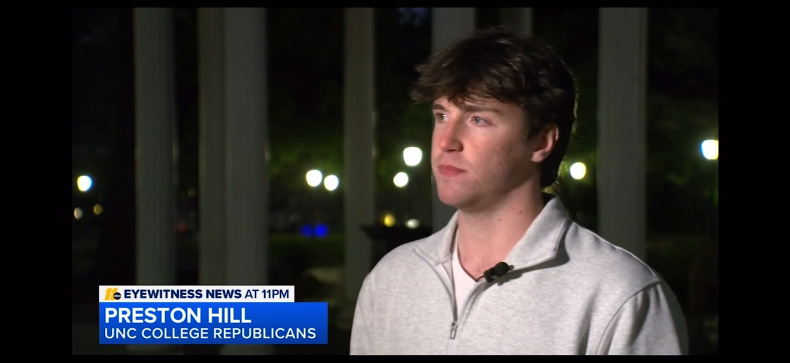
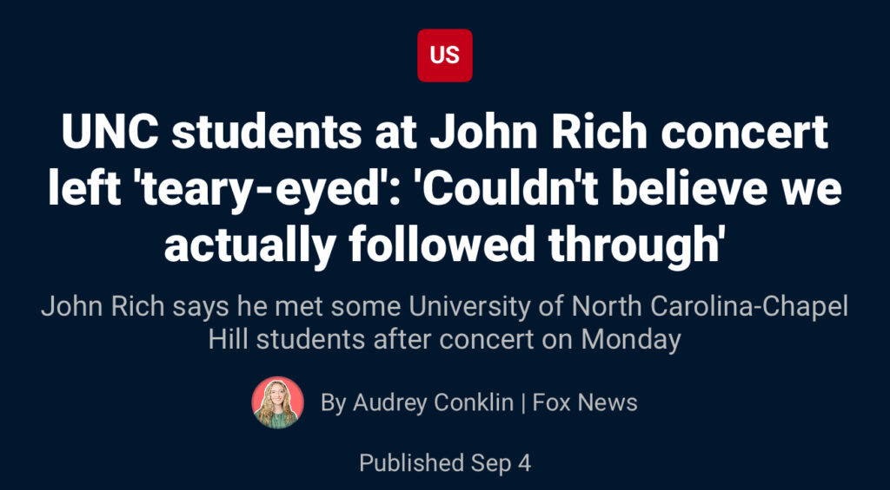
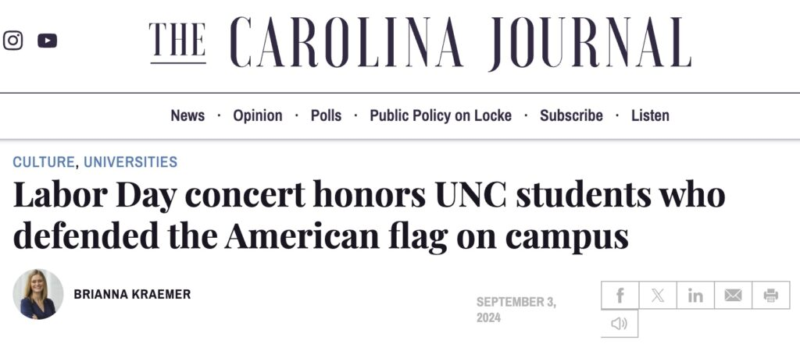
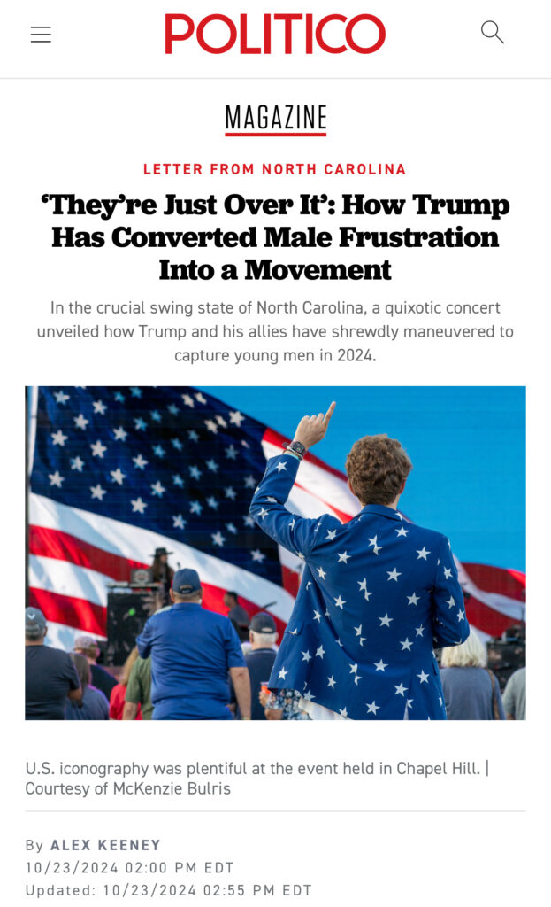
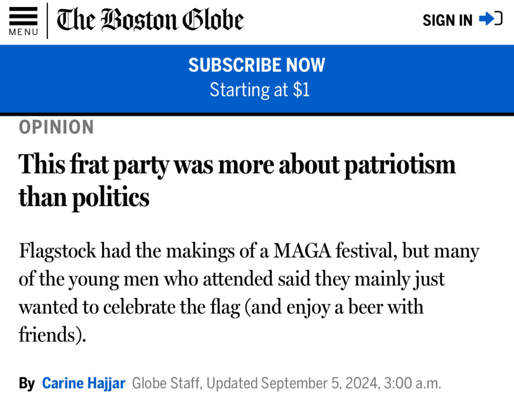
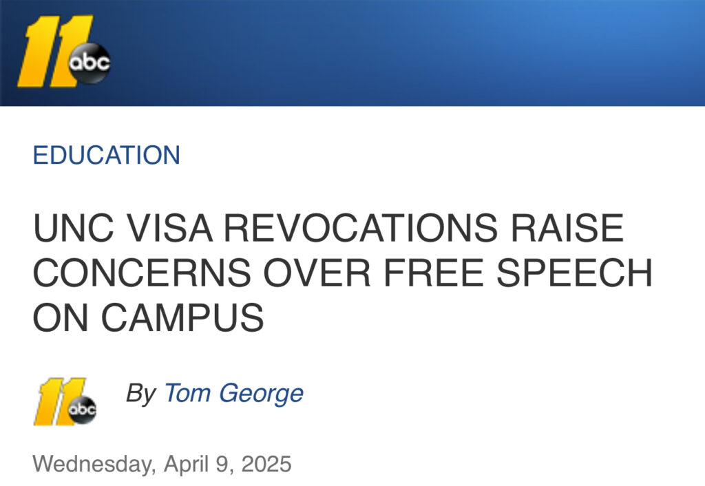
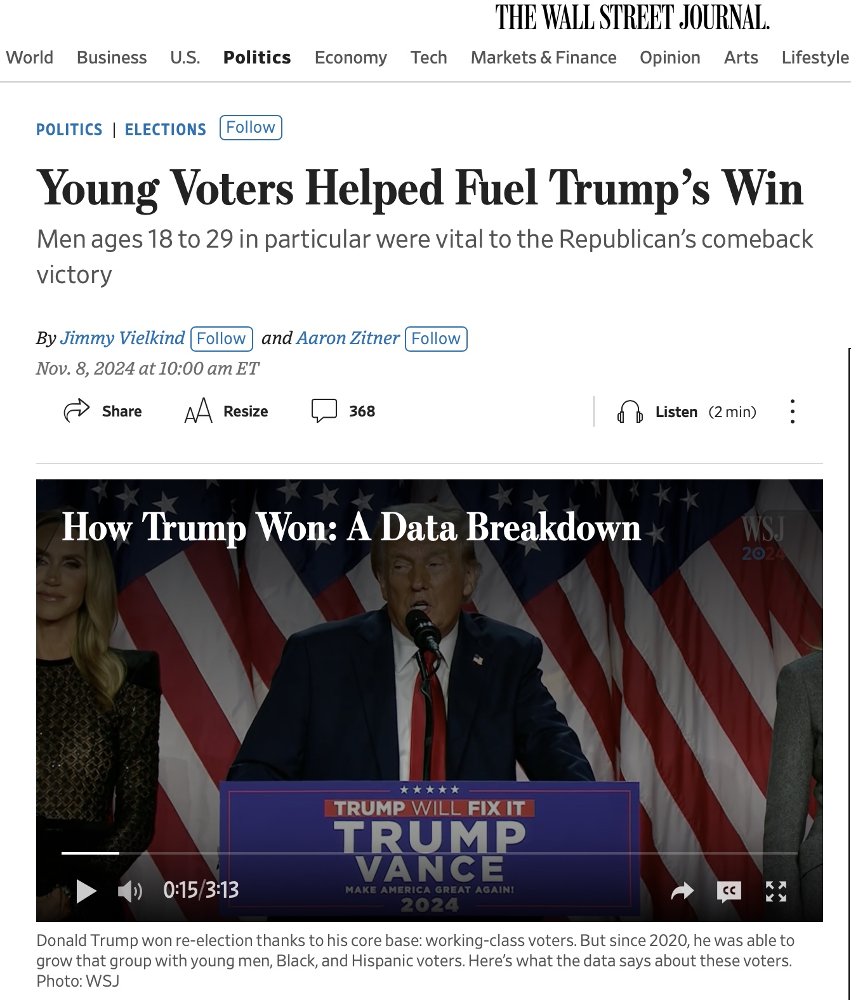
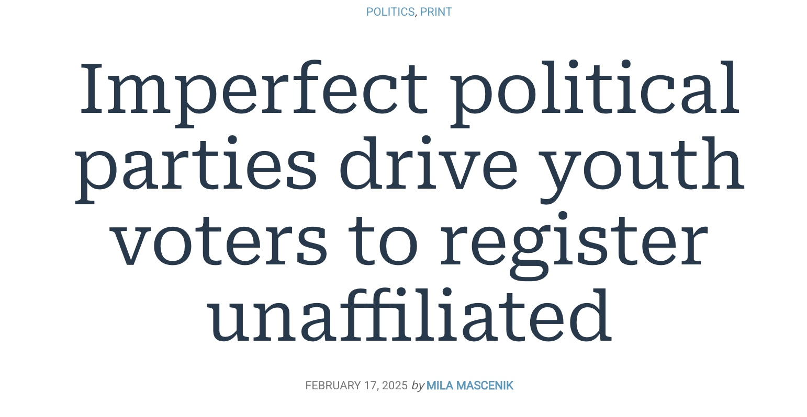
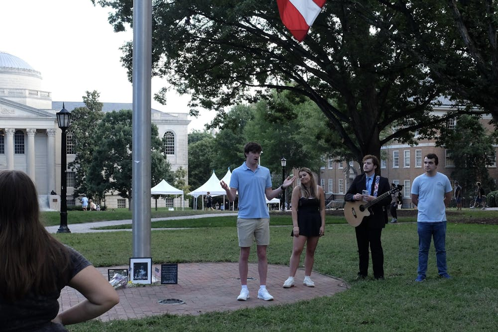

Media
Press coverage and interviews.
The live site frames this page around respectful communication and a willingness to talk to the press, from local stations to national outlets.

As someone who values respectful communication and thoughtful dialogue above anyone’s personal values or beliefs, I have made it my mission to never turn down an opportunity to do interviews or talk to the press.
During my time as President and Vice President of UNC-Chapel Hill College Republicans, I have had the opportunity to interview with local outlets like ABC11, CBS17, Chapelboro, The Assembly, The Carolina Journal, The Daily Tar Heel, and The Raleigh News & Observer, as well as national outlets like Fox News, Politico, The Boston Globe, Reuters, and The Wall Street Journal.
Stories
Click through to the original coverage.

Fox News UNC students at John Rich concert left “teary-eyed” The Hechinger Report College Uncovered: DEI backlash
Carolina Journal Labor Day concert honors UNC students who defended the American flag
Politico “They’re Just Over It”: how Trump has converted male frustration into a movement
The Boston Globe UNC Flagstock was more about patriotism than Trump
ABC11 UNC visa revocations raise concerns over free speech on campus
The Wall Street Journal Young voters helped fuel Trump’s win
Chapelboro Imperfect political parties drive youth voters to register unaffiliated
The Daily Tar Heel UNC College Republicans hosts memorial for Charlie Kirk The Daily Tar Heel N.C. General Assembly passes 'Iryna's Law' following Charlotte light rail stabbing